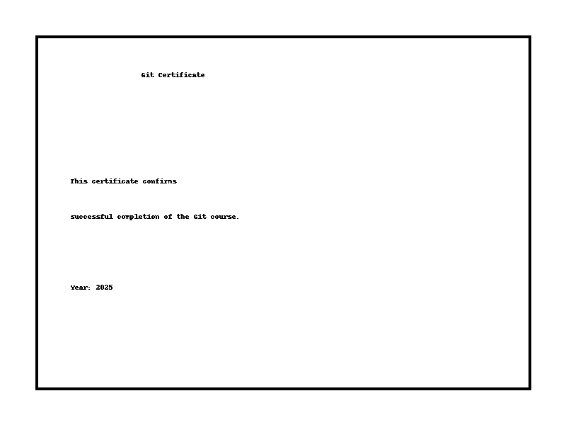

Система контролю версій (VCS) — це інструмент, що дозволяє зберігати історію змін у файлах, відслідковувати, хто і коли вніс правки, а також повертатися до попередніх версій. Приклади: Git, SVN, Mercurial.
Git — це розподілена система контролю версій, створена Лінусом Торвальдсом у 2005 році для розробки ядра Linux. Вона дозволяє командній роботі над проєктами, зручне злиття змін, гілкування та відновлення історії.
Приклад сертифікату після проходження курсу:
